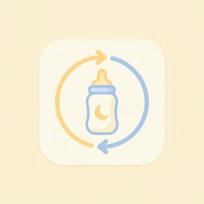
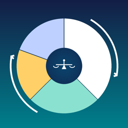
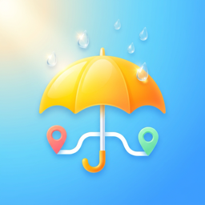
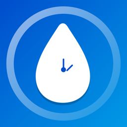
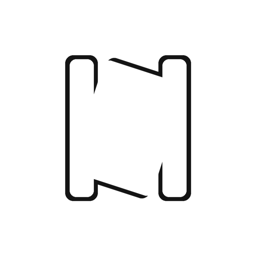
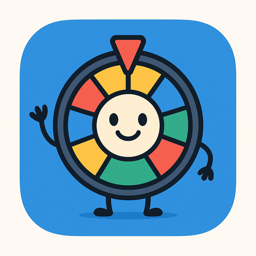
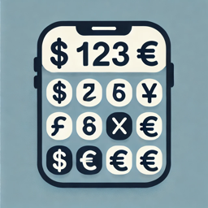

鄭惟臣 Weichen Cheng
10 年 iOS 開發經驗，做過多種類型的 App。工作之餘，也會把生活中遇到的需求做成 App，目前有 9 款上架 App Store。面對 AI 改變寫程式的方式，這幾年持續學習如何與 AI 合作來縮短開發時間；透過制定架構與測試標準、釐清需求，以及完成後的驗證，確保程式碼品質並符合需求。
上架作品

BabySync+
寶寶照護紀錄：餵奶、尿布、睡眠、副食品、生長曲線。Widget 一鍵記錄、動態島計時、家人即時同步、訂閱制 Plus。

WealthPoise
投資組合再平衡：台／美／港／日股票與 ETF、兩種再平衡模式、7 種幣別、淨值月快照、偏離警示、iCloud 同步。
CarSpeedTest
GPS 零百加速計時：起步自動計時、速度曲線、iCloud 同步紀錄。2020 年上架維護至今。

RainWay 通勤知雨
多站點通勤降雨機率與帶傘建議，主畫面與 Widget 一眼看完。無後端、不需 GPS 權限。
BabyCam 寶寶監視器
兩台 iPhone／iPad 一台當寶寶端、一台當父母端，影音只在同一個 Wi‑Fi 或熱點內點對點傳送，不經伺服器、不需帳號。子母畫面、按住說話、聲音與斷線提醒。

Glucose Timer
飯後血糖計時提醒：一鍵開始用餐、自動判斷餐別、兩小時後推播、長按通知直接記錄、紅綠燈日曆。資料只存本機。



開發方式
經驗寫成規範
架構、分支流程、合併條件（可編譯、測試全過、文件更新）與程式碼準則依十年經驗訂定，寫進每個專案的 CLAUDE.md。
規格先行、測試依需求
新功能先寫規格或 OpenSpec 提案，再依規格實作。測試依需求撰寫，而不是照程式的輸出反推，覆蓋率 90% 以上。
獨立 Code Review
實作完在新的 session 做 code review，對照規格確認功能都做到，不讓實作者自己驗自己。另外用自訂的 Claude Code skill 專找空值、網路失敗、同時操作這類容易漏掉的情況；找到的問題先實際重現，確認會發生才修。
上架流程化
自訂 skills 掃描專案，產出多語系文案、關鍵字、隱私權標籤、年齡分級與審核備註，以及隱私權政策與支援頁；截圖直接用 App 的真實畫面渲染。fastlane 一鍵上傳。
工作經歷
百阜科技 · iOS 工程師
- 博弈遊戲 App：iOS 原生端（UIKit / SwiftUI）與 Unity 遊戲內容介接
- 聊天軟體 App、影片播放 App；MVVM / MVVM-C；多品牌版本 App 上架維護
- 在團隊導入 AI 輔助開發；團隊 3~6 人
即準數位科技（MixerBox）· iOS 工程師
- MixerBox 新聞 App：修正 bug、新增功能、固定節奏送審上架；Firebase Crashlytics
希格斯資訊科技 · APP 工程師
- RxSwift + MVVM 實作登入、註冊、充值、提現、交易紀錄與第三方 web game 串接
- 從零建立 CI/CD（Jenkins + fastlane）；導入 SwiftLint 與 Crashlytics
趣遊科技 · 高級工程師
- 建立新博弈 App 的架構（MVVM）並開發，重構既有 App；團隊 3~4 人
昕力／傑亮資訊 · 軟體工程師
- 遠傳健康＋：HealthKit 與 Google Fit 整合、推播、Core Bluetooth 健康裝置串接
- 饕客夯（Facebook SDK、Google Maps SDK）；富邦保單平板工具（Xamarin + C#）
功典資訊 · 軟體工程師（後端）
- 電商行銷分析系統：ASP.NET Web API 2、Quartz.NET、Entity Framework 6、MSSQL、MongoDB
精誠資訊 · 軟體工程師
- 銀行系統與理專財富管理系統（C#、Java）
技能
語言與架構
Swift、async/await、Combine、RxSwift；MVVM / MVVM-C、The Composable Architecture、依賴注入（Swinject）UI 與系統整合
SwiftUI、UIKit（Storyboard／純程式碼 Auto Layout）、Observation、Swift Charts；WidgetKit、Live Activity、AppIntents、UserNotifications、BackgroundTasks資料與網路
SwiftData、Core Data、CloudKit、Firebase（Auth、Firestore、Storage）、Moya、SDWebImage、WebRTC、Network framework、CryptoKit裝置與媒體
Core Location、CoreMotion、MapKit、WeatherKit、Core Bluetooth、HealthKit、AVFoundation變現與帳號
StoreKit 2 訂閱、Sign in with Apple、Google Mobile Ads、UMP、App Tracking Transparency測試與品質
Swift Testing、XCTest、SwiftLint、Firebase Crashlytics開發工具與上架
Xcode、Git、SPM、CocoaPods；fastlane、Jenkins CI/CD聯絡
歡迎討論 iOS 正職機會或 App 接案。